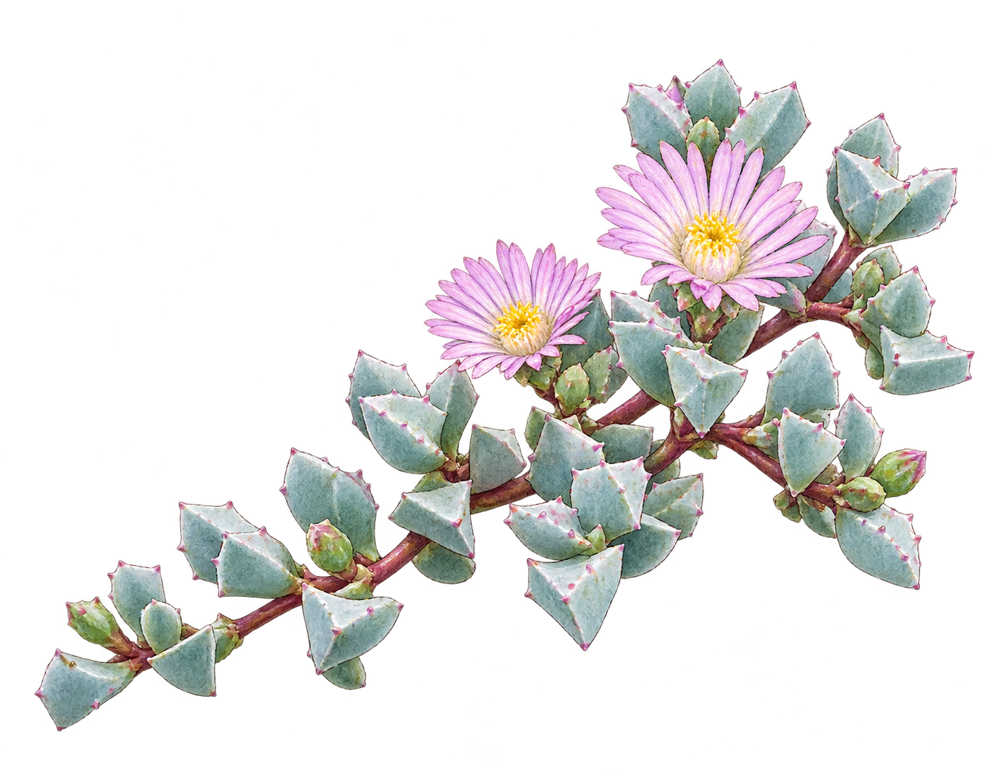

Elastic SIEM en Ubuntu
Despliegue de Elasticsearch, Kibana y Logstash; recolección con Elastic Agent y análisis de logs web para identificar intentos de login fallidos y sondeos a rutas sensibles.
Tigre, Buenos Aires / Argentina
Soy Sebastián Ré, analista SOC L1 en formación y desarrollador full-stack. Me gusta encontrar patrones entre el ruido, ya sea en un log, un sistema o una buena taza de café. Orientado a resultados y al aprendizaje continuo.

01 / Perfil
Combino formación en programación con práctica enfocada en operaciones de seguridad. Mi objetivo es aportar criterio, curiosidad y orden en la detección e investigación de incidentes, y en el desarrollo backend de soluciones útiles.
02 / Laboratorios & proyectos
Despliegue de Elasticsearch, Kibana y Logstash; recolección con Elastic Agent y análisis de logs web para identificar intentos de login fallidos y sondeos a rutas sensibles.
Proyecto final sobre un entorno Windows Server 2016: reconocimiento, explotación controlada, auditoría de identidades e informe técnico-ejecutivo con criticidad CVSS y mitigaciones.
Catálogo digital web y bot de Discord en Python integrado con la API de OpenAI. Trabajo con APIs, automatización y desarrollo backend de soluciones enfocadas en necesidades reales.
Explorá mis repositorios y avances: programación, automatización y aprendizaje continuo con una mirada práctica.
03 / Caja de herramientas
04 / Aprendizaje continuo
05 / Conversemos
Estoy abierto a oportunidades junior en ciberseguridad y desarrollo backend, además de proyectos y conversaciones interesantes.